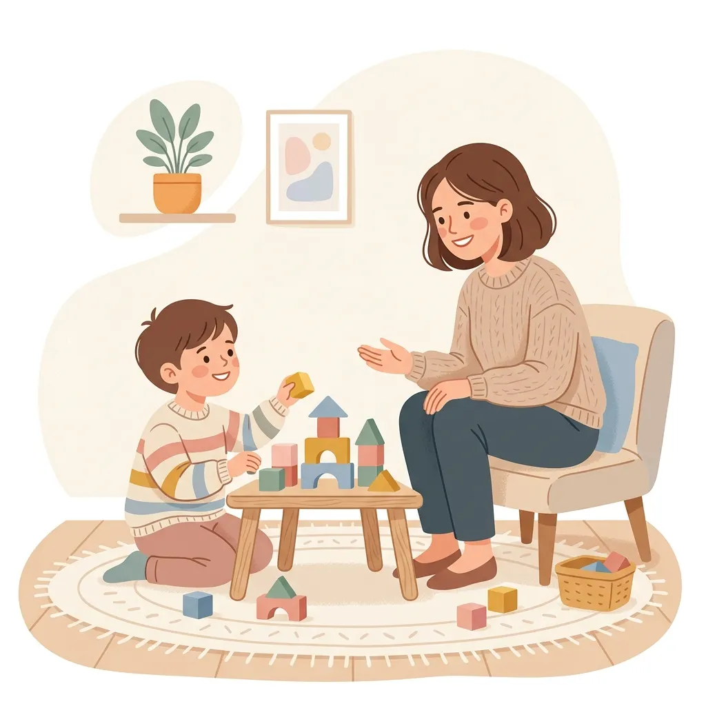

Observar jugando
Reconocemos sus formas actuales de comunicación mientras participa en actividades familiares.
Una primera visita basada en el juego para conocer cómo se comunica tu hijo, orientar a la familia y acordar juntos el siguiente paso.
Atención a domicilio · Orientación para la familia · Coordinación por WhatsApp

El encuentro permite observar cómo se comunica tu hijo durante el juego, conversar sobre tus inquietudes y definir una orientación inicial para la familia.
Reconocemos sus formas actuales de comunicación mientras participa en actividades familiares.
Conversamos sobre rutinas, dudas y situaciones cotidianas que quieres comprender mejor.
Compartimos orientaciones iniciales y explicamos alternativas de acompañamiento.
Abordamos las dificultades comunicativas desde una mirada integral y afectiva, ajustándonos a la etapa del ciclo vital de tu hijo.
Para niños que tardan más en comenzar a hablar o usan menos palabras de lo habitual para su edad. Estimulamos la intención y comprensión en un ambiente seguro.
Apoyo especializado para pronunciar fonemas difíciles (como la 'R', 'D', 'L'). Trabajamos la motricidad orofacial a través de juegos interactivos y entretenidos.
Desarrollo del contacto visual, inicio de conversaciones y juego compartido. Ideal para niños que necesitan guías empáticas en la interacción con sus pares.
Espacio de orientación exclusivo para apoderados y familias. Te guiamos sobre cómo enriquecer la rutina diaria de tu hijo en casa con estrategias que facilitan su adquisición de palabras.
Organizamos el servicio para comprender las rutinas del niño y acompañar a la familia con claridad.
Conversamos por teléfono o WhatsApp sobre tus inquietudes y coordinamos una primera visita a domicilio en Santiago.
Visitamos tu casa y compartimos un espacio de juego espontáneo. Observamos su lenguaje mientras se divierte con juguetes cotidianos, de manera natural.
Diseñamos actividades divertidas para hacer juntos y te entregamos pautas simples para el día a día. Celebraremos cada avance a su propio ritmo.

Fonoaudióloga con enfoque en comunicación y desarrollo infantil
El acompañamiento integra juego, observación y conversación con la familia para comprender cómo se comunica cada niño en sus rutinas.
La atención a domicilio permite trabajar con elementos familiares y compartir orientaciones que pueden incorporarse al día a día.
La versión publicada presenta el título y los antecedentes entregados por la profesional.
La versión publicada puede enlazar la consulta oficial del registro correspondiente.
La familia participa en la conversación y recibe pautas aplicables a sus rutinas.
Las visitas se coordinan a domicilio en Santiago.
Cuéntanos tus datos y una preferencia de horario. Prepararemos el mensaje para coordinar contigo la visita a domicilio.